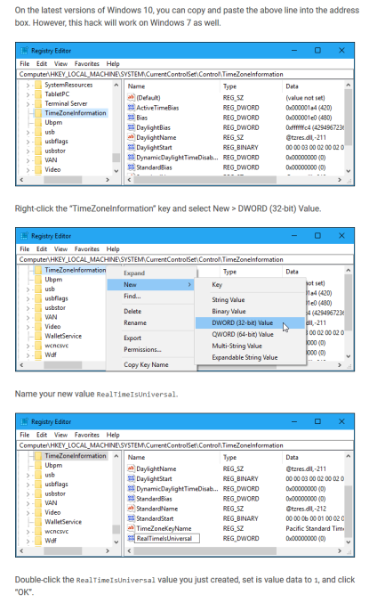

Software Recs Nobody Asked For
Table of Contents
| Go up 1 level | About Me | Sitemap |
| Personal Blog | Music Recs | Software Recs |
Welcome!
This is where I recommend software. It’s too bad that nobody asked.
Part 4: Doom Emacs
Authored: Sun Dec 12 02:00:00 2021
Today I’d like to talk to you guys about Doom Emacs, a distribution of GNU Emacs I’ve recently come to enjoy using.
Doom Emacs is a distribution of Emacs that, amongst other things, comes configured with good defaults, uses Vim keybindings, and overall just looks nicer out of the box.
This guide assumes a few things, which I hope to cover in later articles. This assumes that you are willing to learn something new. If you are using Windows, it also assumes that you have WSL2 set up with Ubuntu, and either that you run an X11 server or have WSLg via some other method (aka having Windows 11). I will point out when I offer an OS specific instruction.
In order to get Doom Emacs, you must first install base GNU Emacs. On Ubuntu, Ubuntu WSL, and most other static release linux distributions, they offer an out of date Emacs from the repositories. We must, therefore, take steps to ensure we get a more up to date Emacs than our repos offer.
On Debian based distributions, this is relatively simple. You need to add what is called a PPA (Personal Package Archive) as a software source via APT. You should always be careful when you do so, since there is the potential for system breakage whenever you use newer packages than your repo offers.
Distributions based on Ubuntu should have `add-apt-repository` available by default. On debian, you will need to install the `software-properties-common` package.
sudo apt install software-properties-common
Note: Apt is specific to the Debian family of distributions, which includes but isn’t limited to Ubuntu, Linux Mint, Pop! OS, and the like.
sudo add-apt-repository ppa:kelleyk/emacs sudo apt update
The add-apt-repository command will prompt you to accept the key. This ensures that non-trivial effort would need to be made to get a fake or bad package to your system.
Now we need to download GNU Emacs. As of the time of writing, Doom Emacs wants Emacs 27.1 or greater as the base Emacs. So we need to:
sudo apt install emacs27
The package is called Emacs27 to differentiate it from the “emacs” package your distribution of Linux offers. It also lets you pick a specific version if you have more specific needs. The PPA I had you add offers emacs25, emacs26, and emacs27 as of the writing of this article.
Now that we have installed Emacs, we must install pre-requisites for Doom Emacs to function correctly. On Ubuntu, those would be the following.
sudo apt install git ripgrep fd-find
Now that we have installed Emacs and the Doom Emacs pre-requisites, now we must install Doom Emacs on top of GNU Emacs. I will give the instructions here, but it is possible that breaking changes will be made, so always double check the official GitHub.
git clone --depth 1 https://github.com/hlissner/doom-emacs ~/.emacs.d ~/.emacs.d/bin/doom install
It would be a very good idea to add `~/.emacs.d/bin/` to your user’s PATH. This should be relatively easy if you are using Bash, the default on most linux distributions.
If you are running Linux, you should be able to run Doom Emacs now. If you are using Windows, you may be able to boot now, but you might also receive a strange error.
Error in private config: config.el, (file-error Creating directory Permission denied /run/user/1000)
Hopefully you don’t end up encountering this, but what you need to do to fix it is as follows. I don’t know why I keep getting this error but I can’t seem to get it to go away.
su - mkdir /run/user/1000 chown 1000:1000 /run/user/1000
In any case, you should now have the program running for the first time, and will undoubtedly be lost about what you should do next.
For now, I’d like to direct you to DistroTube / Derek Taylor’s videos on Doom Emacs. At some later date I will add on to this article myself. Cheers and good luck on your free software journey!
Part 3: Phone Emulation on GNU/Linux based systems
Authored: Sun Oct 04 01:00:00 2020
The objective of this article is to share my phone emulation setup, which works reasonably well for me, in the hopes that it is useful.
This setup neatly solves the majority of “I’m unable to install certain apps!” problem that most have on Linux, by adding “ARM Translation” as part of the installation process.
We do this because some phone apps are written for the ARM architecture exclusively. This is the major cause of being unable to run certain apps in Genymotion.
This is confirmed to work on Linux Mint 20. Your mileage may, but hopefully doesn’t, vary.
- Install your distribution’s version of VirtualBox. This is a pre-requisite for Genymotion. If your terminal output indicates that you need to do something, do it. If you’re not sure how to, search “virtualbox install output ‘your output here’”. The most common problem is needing to `modprobe vboxdrv`.
- Download Genymotion Desktop https://www.genymotion.com/download/
- Open your terminal, navigate to the download directory, and run sudo ./genymotion.bin. The file isn’t going to exactly be called this, type the first part and hit tab to autocomplete the file name.
- Once you’ve installed and run the program, create a phone image. Make absolutely sure the Android API version is one of the following: 4.3, 4.4, 5.1, 6.0, 7.X, 8.0
- Download the correct translation tool for your Android API version https://github.com/m9rco/Genymotion_ARM_Translation
- Drag this file to your running phone emulator. When it asks to flash, say yes. This is why we start with a new image, so if something goes wrong we lose very little.
- Restart the phone. Install Open GApps to get the Play Store app.
Congrats, now you’re capable of running ARM native apps.
Part 2: Fresh Windows Install (what to install)
Authored: Sat Sep 05 01:00:00 2020
Ninite is good for provisioning new software to a new computer, has a decent amount of software available, and is a very hassle-free way to install a set of software on a new windows machine.
For a fresh install, I recommend the following software from Ninite: Firefox, qBittorrent, 7-Zip, Zoom, Thunderbird, Discord, Steam, VLC, MusicBee, Silverlight, TeraCopy, IrfanView, Foxit Reader, LibreOffice, Dropbox, Spybot 2, Malwarebytes, Python 3, FileZilla, and Notepad++. I also provisionally recommend Everything, but would recommend you download and install it separately if you don’t want to be nagged on every startup for admin permission. For whatever reason Ninite doesn’t correctly install it as a service.
O&O ShutUp10 is important to keep toggling off First Party Spyware.
Open your start menu, right click on each metro tile, and click Unpin. Once there are no metro tiles left you’ll have a usable start menu, no Classic Start required.
(This is a dangerous instruction) If you dual boot with linux, open the registry editor (regedit), navigate to the key `HKEY_LOCAL_MACHINE\System\CurrentControlSet\Control\TimeZoneInformation` Right click, Add 32-bit DWORD Value, Name it “RealTimeIsUniversal”, click ok. Then edit the value to “1”. This tweak allows windows time and unix time to co-exist. 
Make sure you install both Spybot Search and Destroy AND Malwarebytes if you are using your windows partition to browse and download from questionable parts of the internet.
If you’re interested in why I recommended the programs I did, here is a short explanation for each.
Firefox I recommend for being the only remaining mainstream non-chromium browser.
qBittorrent I recommend for being the spiritual successor to uTorrent without the proprietary nonsense.
7-Zip I recommend for being completely superior to WinRar.
Zoom because that’s what everyone is using for remote meetings. I wouldn’t ordinarily recommend it.
Thunderbird I recommend because nobody should willingly use Metro Outlook.
Discord…is discord. It’s a mix of teamspeak 3 and mumble, but casualized for the lowest common denominator/end user.
Steam if you do much, or any, gaming. Obviously.
VLC is a good video player and plays most, if not all, formats.
MusicBee is one of the best music players available. It’s reminiscent of iTunes when it was best in class. As far as I’m aware, it’s the music player most audiophiles prefer. Foobar2000 is a good alternative, too, but takes more setup.
Silverlight (and other runtimes) are better to have and not need, than need and not have.
TeraCopy supports resume infinitely better than native windows file transfer.
IrfanView is more intuitive to use than Windows Metro Pictures app, at least to me.
Foxit Reader is a gratis alternative to Adobe Reader.
LibreOffice: because subscribing to Microsoft Office 365 is nuts unless your organization pays for it for you.
Dropbox is my backup/sync solution of choice. Your mileage may vary.
Spybot 2 and Malwarebytes work well together with Windows Defender to cover most common angles of attack.
Python is one of the easier languages to write in and you can automate a lot of things with it. Everyone should learn a little IMO.
FileZilla I provisionally recommend if you use FTP a lot. If not, I wouldn’t bother, as it’ll never be used.
Notepad++ is a decent, light-weight text editor that supports code highlighting, themeing, and plugins.
Everything is a very very good search utility. It outperforms windows search by a mile.
Part 1: uBlock Origin
Authored: Wed Sep 02 01:00:00 2020
If you are not using uBlock Origin at this point, you are doing something wrong.
Advertising on the internet has been ballooning out of control in the past 10 years. So much so, that most corporate sites became heavily bloated messes Google had to rescue from themselves via AMP.
If it is at all available to you, install uBlock Origin Extra as well. It makes it harder for 3rd party actors to pretend to be first party in regards to cookie and tracking.
WordPress, alone, has at least 7 blocked entries per page; at least 10% of total requests.
This combination also seems to be reasonably effective at blocking ads on YouTube videos.